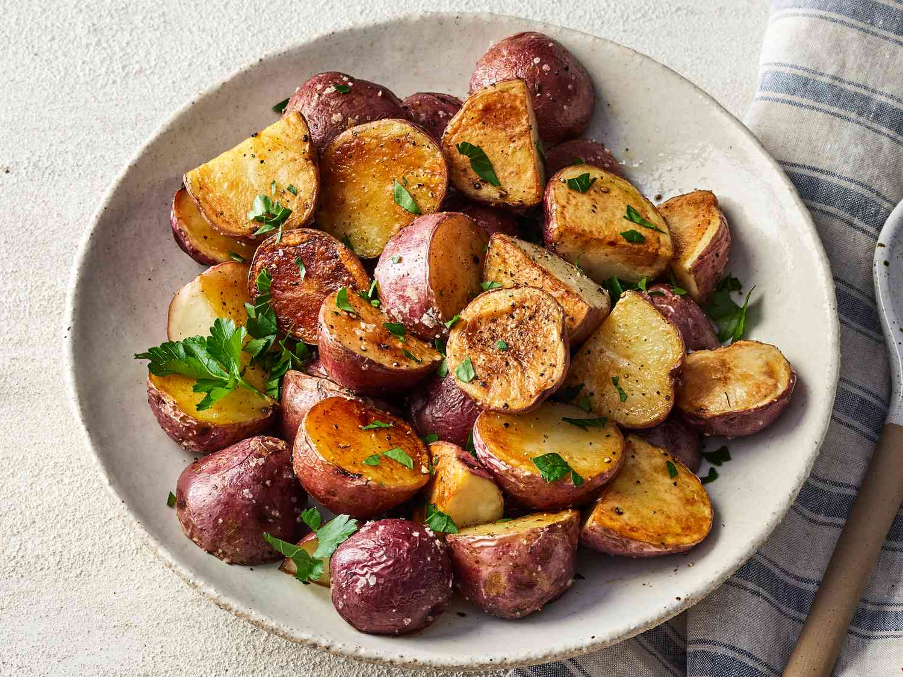

Roasted red potatoes at their best — plain and simple. Red potatoes are tossed with olive oil, salt, and pepper, then roasted to perfection.
Gather all ingredients. Preheat the oven to 400 degrees F (200 degrees C) and adjust the oven rack to the lowest position.
Toss potatoes with oil, salt, and pepper in a bowl. Arrange, cut-side down, on a rimmed cookie sheet or jellyroll pan.
Roast potatoes in the preheated oven until tender and golden brown, 20 to 30 minutes. Transfer to a serving dish.
Serve and enjoy!